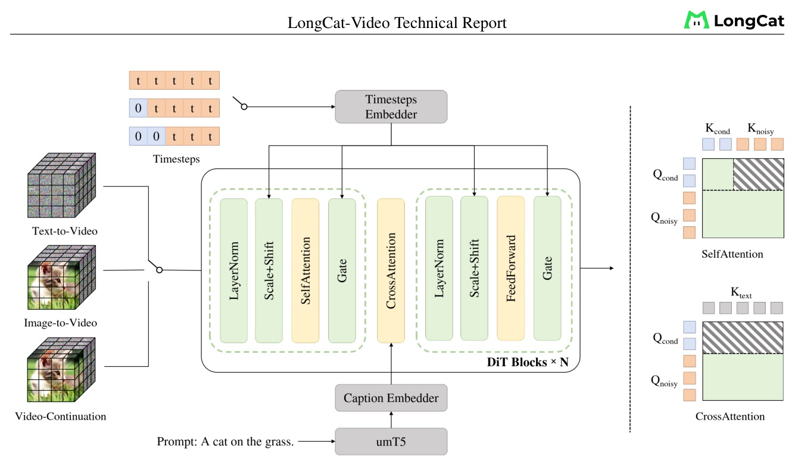
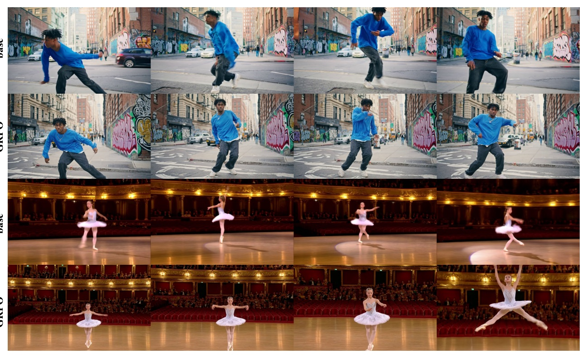
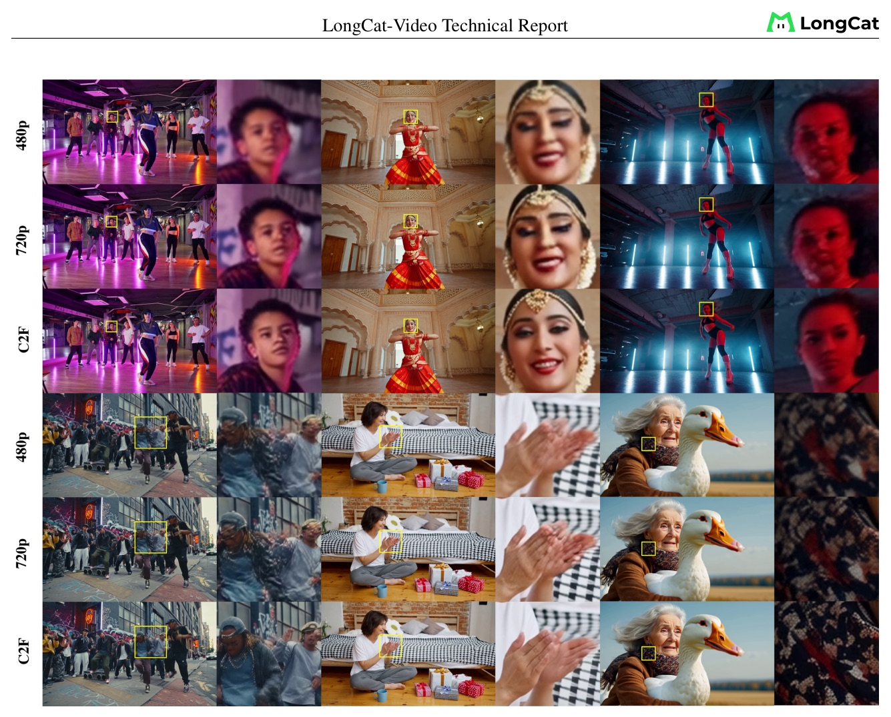
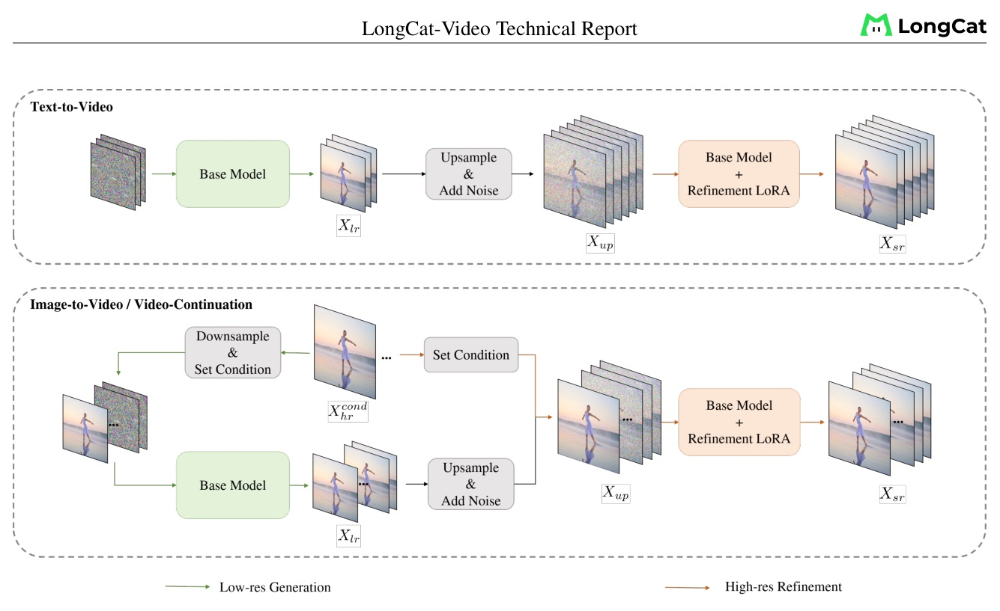
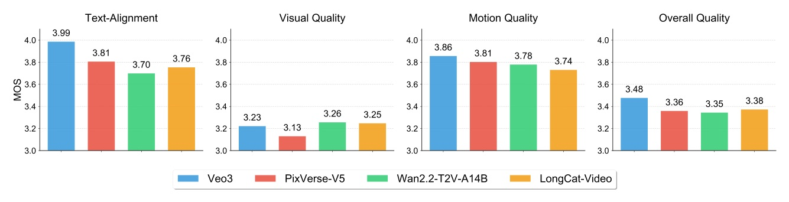

從統一條件幀、Flow-GRPO，到 coarse-to-fine + block sparse attention 的 720p/30fps 路線
2026-10-04：由 GitHub Trending 的 meituan-longcat/LongCat-Video 選入；不是新近頂會 accepted paper。
把三種任務壓進一個條件幀模型，再把高解析推論拆成「低解析生成 + 五步 refinement」。
品質與成本不是兩個獨立的 optimization。
| component | reported setup |
|---|---|
| Transformer | 48 layers · hidden 4096 · 32 heads |
| Blocks | 3D self-attn + text cross-attn + SwiGLU |
| Stability / position | AdaLN-Zero · QKNorm · 3D RoPE |
| Latent compression | WAN2.1 VAE + patchify = 4 x 16 x 16 |
| Text | umT5; Chinese + English captions |

condition tokens 的 self-attention 不被 noisy tokens 影響；condition tokens 不參與 cross-attention。



Refinement 從 upsampled latent 加入 moderate noise；報告設定 tthresh = 0.5，使用 5 sampling steps。
| configuration | latency | speedup |
|---|---|---|
| Dense, 50 steps | 1429.5 s | 1.0x |
| Distilled, 16 steps | 244.6 s | 5.8x |
| Distilled + C2F, 16/5 | 135.3 s | 10.6x |
| Distilled + C2F + BSA, 16/5 | 116.5 s | 12.3x |
單張 H800、FlashAttention3；表中是 720p x 93 frames，同一份報告內的比較。

LongCat：TA 3.76、VQ 3.25、MQ 3.74、Overall 3.38；比較只在作者設計的 benchmark 與 protocol 下成立。
| model | commonsense | total |
|---|---|---|
| Veo3 | 69.48 | 66.72 |
| Vidu Q1 | 65.98 | 62.70 |
| Wan2.1 | 63.98 | 60.20 |
| LongCat-Video | 70.94 | 62.11 |
1,628
| I2V MOS | LongCat | best in chart |
|---|---|---|
| Image-Alignment | 4.04 | 4.18 (Hailuo / Wan) |
| Text-Alignment | 3.49 | 3.85 (Hailuo) |
| Visual Quality | 3.27 | 3.27 (LongCat) |
| Motion Quality | 3.59 | 3.80 (Hailuo) |
| Overall Quality | 3.17 | 3.35 (Seedance) |
效率不是把 attention 隨便砍掉，而是把「哪些 state 可以固定、哪些 token 必須互看」先定義清楚。
The condition sequence remains fixed throughout both training and inference.
固定條件序列，是任務統一與 K/V cache 能同時成立的計算前提。§3.2 p.7
This approach enables precise credit assignment and leads to more stable, interpretable policy optimization.
只保留一個 stochastic timestep，讓 reward 的責任能落回特定步。§3.3.1 p.10
the mutual constraints imposed by multiple rewards create a natural regularization effect
多 reward 的角色是互相限制，不是把所有 score 相加。§3.3.2 p.13
統一條件幀、穩定化 Flow-GRPO、C2F + BSA：把長影片從架構、訓練與 serving 一起設計。